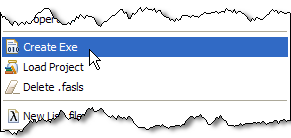

Creating Lisp Project
Start Eclipse.
Go to Window > Open Perspective > Other...

Choose Lisp. You'll need to wait while Cusp starts and connects to Lisp process.
The first time Cusp starts it compiles code that connects to Lisp, and it might take
couple minutes on slow machines, so be patient. Next time you'll start Cusp, it will
load Lisp and connect to it much quicker.

Start new project: File > New > Lisp Project
In New Lisp Project dialog box accept default settings and click Finish.

The Project wizard will create four files: new-lisp1.asd, main.lisp, defpackage.lisp,
and tests.lisp
- new-lisp1.asd - it is a make file which describes lisp how to build your program
- defpackage.lisp - it is an interface file (somewhat analogous to header files in C/C++),
here you declare functions and other symbols that are exported from the package
- main.lisp - this file will hold your code
- tests.lisp - this file will hold tests for you code
Once project is created it will be automatically compiled and loaded. Highlighted
regions on the figure show successful compilation message and current package in REPL.
Writing Code and Basic Navigation
Open file main.lisp and scroll to the end of the file. For now ignore the code
that the wizard has generated. Type opening bracket '(' and notice how Cusp automatically
inserts closing bracket. Lisp code contains many brackets and Cusp has many
features dealing with bracketed expressions (s-expressions). This behavior is
optional and can be customized in Cusp preferences:
Continue typing '(defun)':
If you now press space bar the code automatically expanded (AutoEdit) and argument tip is shown:
The AutoEdits are customizable in preferences on AutoEdits page. Continue
entering code as follows:

Save the file (Ctrl+S). As file is saved your new code is immediately compiled.
You can check this by typing in lower part of REPL (f) and pressing Ctrl+Enter
or clicking on Send button:
The result is displayed in upper part of REPL:

The function f is defined in package new-lisp1. To see this
change package to default CL-USER by first clicking on 'Change package' button:
And then selecting package CL-USER:
Note: the other way to change package is evaluating (in-package 'cl-user) in REPL.
From other packages the function f from new-lisp1 is called by
(new-lisp1::f). Notice '::' - this means that the function is internal to the package.
To export the function f from the package new-lisp1
do the following (these operations are overkill for such a short source code,
but they show important navigation features of Cusp IDE):
Select in-package :new-lisp1 in outline window to jump to
the location of this statement in the code.
Ctrl+Click on :new-lisp1 (or press F3) to find location
where this symbol is defined.
This operation brings up dialog box Definitions. Select
(DEFPACKAGE :NEW-LISP1) and hit OK:
The previous operation will bring up the file defpackage.lisp. Type
f in :export and save file:

Now the function f is exported from the package
new-lisp1 which can be checked by typing (new-lisp1:f)
in REPL (note single : instead of double :: in previous test,
which signifies the fact that we just called a symbol exported from the package).
To get back to the definition of function f just type
Alt-BackArrow Alt-BackArrow or use navigation buttons on main toolbar:

Quitting And Restarting
Once you tired of coding you will want to close Eclipse. Go ahead and just close
it, you don't need to do anything special to your Lisp session.
To get back to your code, open Eclipse, then make sure that you are in Lisp
Perspective, if not select it. Before you can continue coding your program, you
need to load it. To do this, right click any project file or folder project and
select
Load Project :
This will compile and load all files for your project, and also will change REPL to
your package. You can check this by running (f)
Building Executable
One often asked question by people starting learning Lisp is "How do I create executable?"
The answers to this question that can be found on the net are not very useful, since traditionally
Lisp programs are executed inside Lisp image (virtual machine) and experts
don't see use of executables. However, since this is a very common question, Cusp
provides very simple means of creating single executable file from your Lisp code (this feature
currently works only with SBCL).
Before you can create executable you need to define a top level form: this is a
function that doesn't take arguments and returns integer (0 if success).
This top level form is the entry point to your program (function that is
called first when executable starts).
By default the 'New Lisp Project' wizard creates example function that
can be used as a top level form 'main' (it also shows how to pass arguments
into Lisp program).
Let's crate an executable that uses the function generated by the wizard.
To do this, right click on any file in the project or its folder and select
'Create Exe':

This brings up 'Create Executable' wizard. Adjust path where you want
executable to be created 'Finish':
After executable is created it can be run from shell (notice that I redirect
stderr to null, since I don't want to see starting warning message from
SBCL running on Windows):
Note: The executable is about 20MB large because it contains whole
Lisp system including compiler and debugger. If Lisp is already installed
on the system it is possible to create executable script. This feature is
not yet provided by Cusp. See cl-launch.
Back to table of contents